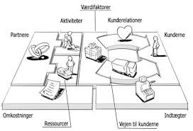
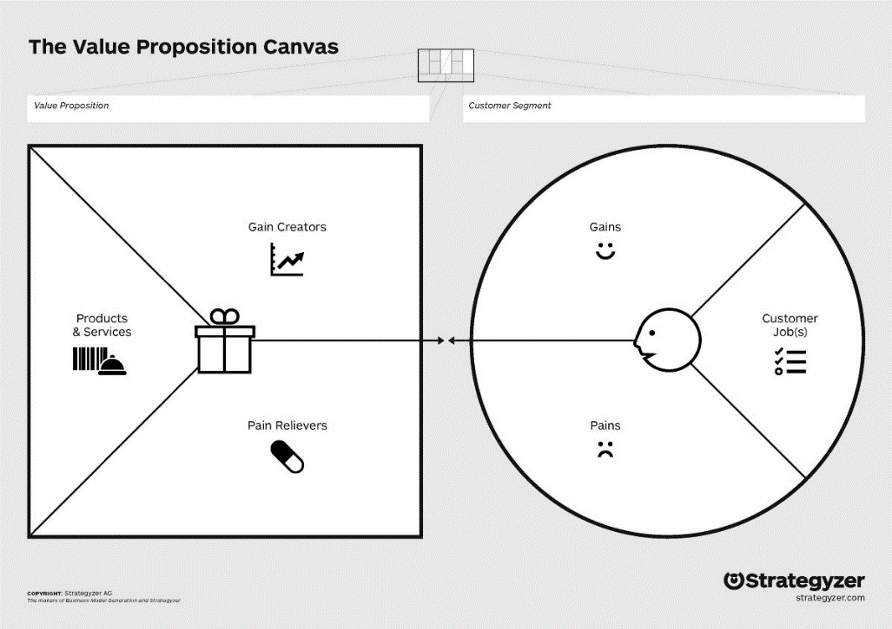

BUSINESS MODEL CANVAS
Forretningsmodel beskriver rationalet bag,hvordan en organisation skaber, leverer og fastholder værdi. Hvordan virksomheden agter at generere indtægter for at skabe værdi for kunder. Til gengæld, kunderne bringer omsætning og fortjeneste til virksomheden. Franchise er en eksemple af forretningsmodel.
Kundersegmenter:det vigtigste i en foretningsmodel er kunder. En foretningsmodel kan har flere små eller store kundesegmenter.
Værdi:hvilken produkt eller ydelse, virksomheden kommer med til at dække kundenes behov og ønsker. Hvordan bliver virksomhedens produkt/ydelse bedre end andre på marked. Hvad gøre virksomheden for at få kundene til at vælge deres produkt/ydelse frem for det andre.

Kanaler: når vi har styr på hvad vi sælger til hvem, er det tid til at finde ud af,hvordan vi kommer ud til kundern e. Gennem hvilke kanaler skal vi sælge.
Relationer: kunderelationer er vigtige,hvis du vil fastholde dine nuværende kunder. Man skal selv gøre meget, for at få en god relation til kunden lige fra starten af.

kilder
business model generation-bog